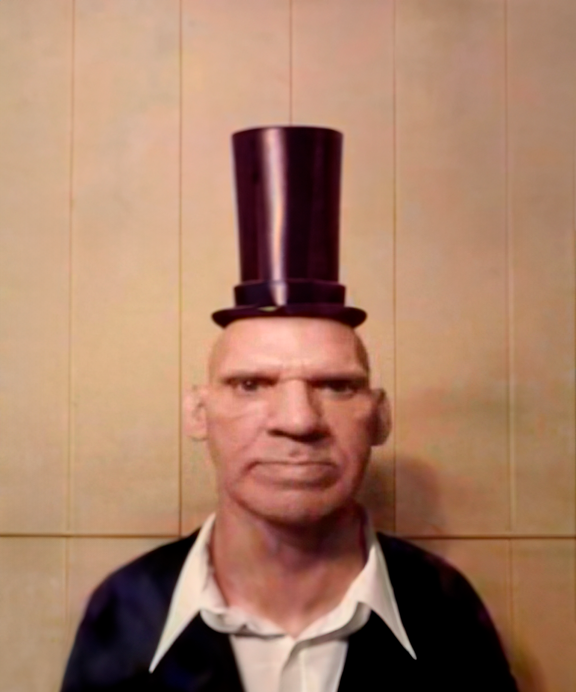
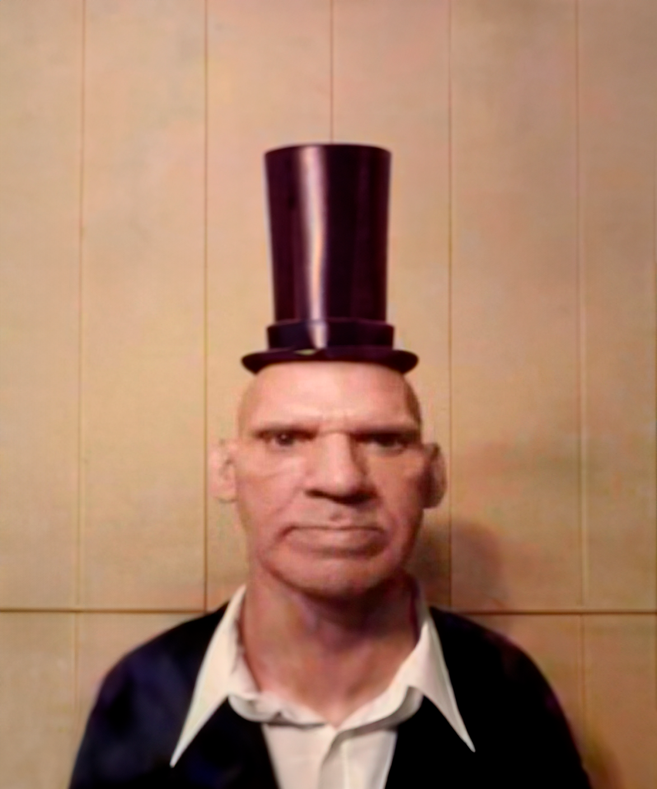

Добро пожаловать на мой сайт!
Это мой крутой одностраничный сайт с анимацией и красивым интерфейсом.
Это мой крутой одностраничный сайт с анимацией и красивым интерфейсом.
Привет! Я Олек, и это моя персональная страница. Здесь вы можете узнать обо мне больше и посмотреть мои работы. Я увлекаюсь веб-разработкой, дизайном и музыкой. Свяжитесь со мной, если у вас есть интересные проекты или предложения!
Егор Крид (настоящее имя Егор Николаевич Булаткин) — популярный российский певец, рэпер и автор песен. Родился 25 июня 1994 года в Пензе, Россия. Егор стал известен благодаря участию в шоу «Фабрика звёзд 7», после чего начал успешную музыкальную карьеру.
Его дебютный альбом «Паспорт» вышел в 2013 году и сразу занял высокие позиции в чартах. Среди самых известных его песен — «Самая самая», «Будильник», «Холостяк», «Слушай Егор Крид» и многие другие. Егор активно сотрудничает с другими артистами и постоянно радует своих поклонников новыми треками и клипами.
Кроме музыкальной деятельности, Егор активно занимается благотворительностью и участвует в различных социальных проектах. Он продолжает развиваться как артист и стремится приносить радость своим слушателям.
 



Свяжитесь со мной по электронной почте: your.email@example.com
Или через социальные сети: